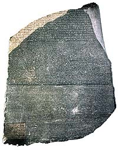

|
What
does the Rosetta Stone say?
The Rosetta stone
is dated to March 196 BC, in the 9th year of Ptolemy V. The background
to the setting up of the stela was the confirmation of the control of
the Ptolemaic kings over Egypt. The Ptolemies were Greeks who had been
ruling Egypt since the fragmentation of the Empire of Alexander the Great,
and while they built temples in the Egyptian style, their lifestyle and
language remained exclusively Greek. Egypt had by now become a multi-cultural
society, a mixture of Greek and Egyptian, although in many parts of the
country the two rarely met.
In the years preceding the setting up of the Rosetta Stone, control of
certain parts of Egypt had been lost to the family of the Ptolemies, and
it had taken the Ptolemaic armies some time to put down opposition in
the Delta; parts of southern Upper Egypt, particularly Thebes, were not
yet back in the control of the government. It appears that it was decided
that the best way to emphasise the legitimacy of the 13 year old Ptolemy
V in the eyes of the Egyptian elite was to re-emphasise his traditional
royal credentials with a coronation ceremony in the city of Memphis, and
to affirm his royal cult throughout Egypt. This second aim was done through
a series of priestly decrees, of which the Rosetta Stone is by far the
best-known example. It is a version of the decree issued at the city of
Memphis; other decrees include the Canopus decree in the Egyptian Museum
in Cairo.
The inscription begins with praise of Ptolemy, and then includes an account
of the siege of the city of Lycopolis (a town in the Delta, not identified
with certainty), and the good deeds done by the king for the temples.
The final part of the text describes the decree's overriding purpose,
the establishment of the cult of the king. For example, it stipulates
how the priests shall maintain the cult of the king ('...the priests shall
pay homage three times a day...'), how the king's shrine is to be set
up ('...there shall be set upon the shrine the ten gold crowns of the
king...'), and days when certain festivals, such as the king's birthday,
shall be celebrated. It ends by saying that it is to be made known that
all the men of Egypt should magnify and honour Ptolemy V, and that the
text should be set up in hard stone in the three scripts which the Rosetta
Stone still bears today (hieroglyphic, Demotic, and Greek).
In pre-Ptolemaic times, decrees in hieroglyphs such as this were usually
set up by the king, and it is an interesting indication of how far things
had changed from Pharaonic times that the priests, the only people still
with the knowledge of writing hieroglyphs, were now publishing such decrees.
The list of good deeds done by the king for the temples hints at the way
in which the support of the priests was ensured, and how the fusion of
Greek and Egyptian cultures was managed.
The Rosetta Stone
is exhibited at the southern entrance to the Egyptian Sculpture Gallery
(Room 4).
|

|